阅读词表
| 词条 | 拼音 | 类型 | 说明 |
|---|---|---|---|
| 戈 | gē | rare_word | 古代横刃长柄兵器。 |
| 爵 | jué | rare_word | 古代酒器；也引申为爵位。 |
| 许宏 | xǔ hóng | person | 考古学者，长期主持或研究二里头考古。 |
| 钺 | yuè | rare_word | 古代大型斧形兵器或礼器。 |
| 后羿 | hòu yì | person | 古史传说人物，文中涉及夏朝早期动荡。 |
| 觚 | gū | rare_word | 古代酒器。 |
| 盉 | hé | rare_word | 古代调酒或盛水器。 |
| 寒浞 | hán zhuó | person | 古史传说人物，曾取代后羿势力。 |
| 肩胛骨 | jiān jiǎ gǔ | rare_word | 肩部骨骼，古代常用于占卜。 |
| 黑曜石 | hēi yào shí | rare_word | 火山玻璃质岩石，断口锋利。 |
| 许知远 | xǔ zhī yuǎn | person | 作家、媒体人，文中曾造访二里头。 |
| 有鬲氏 | yǒu gé shì | person | 古部族名，少康母族相关势力之一。 |
| 篡权 | cuàn quán | rare_word | 夺取权力。 |
| 斝 | jiǎ | rare_word | 古代温酒器或礼器。 |
| 少康 | shào kāng | person | 夏朝传说中的中兴之君。 |
| 昙花一现 | tán huā yī xiàn | idiom | 比喻事物短暂出现后很快消失。 |
| 车辙 | chē zhé | rare_word | 车轮压出的痕迹。 |
| 扉棱 | fēi léng | rare_word | 青铜器或陶器上突起的棱脊装饰。 |
| 局促 | jú cù | rare_word | 狭小、不舒展。 |
| 俨然 | yǎn rán | rare_word | 很像、宛然；也有庄重貌。 |
| 雏形 | chú xíng | rare_word | 初步形成的样子。 |
| 脱臼 | tuō jiù | rare_word | 关节脱离原位。 |
| 豢养 | huàn yǎng | rare_word | 饲养；多指养动物。 |
| 苑囿 | yuàn yòu | rare_word | 古代畜养禽兽、种植林木的园地。 |
| 卜骨 | bǔ gǔ | rare_word | 用于占卜的兽骨。 |
| 窖藏 | jiào cáng | rare_word | 埋藏于地下的储藏物或储藏方式。 |
| 陶坩埚 | táo gān guō | artifact | 冶铸时使用的陶制坩埚。 |
| 半地穴式 | bàn dì xué shì | 项目词典 | 部分低于地面的房屋形式。 |
| 夯土地基 | hāng tǔ dì jī | 项目词典 | 夯土筑成的建筑基础。 |
| 揭竿而起 | jiē gān ér qǐ | 项目词典 | 举起竹竿作旗帜起义，泛指反抗。 |
| 敲骨吸髓 | qiāo gǔ xī suǐ | 项目词典 | 敲碎骨头吸食骨髓的行为。 |
| 长江流域 | cháng jiāng liú yù | 项目词典 | 长江水系覆盖的广大地区。 |
| 青铜礼器 | qīng tóng lǐ qì | 项目词典 | 用于礼仪或祭祀的青铜器。 |
| 人奠基 | rén diàn jī | 项目词典 | 建筑奠基时以人作为牺牲的行为。 | 以人牲用于建筑奠基。 | 将人夯筑在地基内作为建筑奠基祭祀。 |
| 宫殿区 | gōng diàn qū | 项目词典 | 都邑中宫殿和王室活动集中的区域。 |
| 祭祀坑 | jì sì kēng | 项目词典 | 用于举行祭祀或埋入祭品的坑穴。 | 考古遗址中用于掩埋祭品或举行祭祀的坑穴。 | 用于祭祀或埋藏祭品的坑穴。 | 用于祭祀埋牲或埋人的坑穴。 | 考古遗址中用于祭祀、掩埋祭品或尸骨的坑穴。 |
| 红烧土 | hóng shāo tǔ | 项目词典 | 经火烧后变红变硬的土，常见于考古遗迹。 |
| 绿松石 | lǜ sōng shí | 项目词典 | 一种蓝绿色矿石，常用于装饰。 | 蓝绿色矿物，古代常作装饰嵌片。 | 蓝绿色矿物，古代常作饰物。 |
| 铜礼器 | tóng lǐ qì | 项目词典 | 用于礼仪或祭祀的青铜器。 |
| 人牲 | rén shēng | 项目词典 | 被用于祭祀的人。 | 被用于祭祀或献祭的人。 | 被杀用于祭祀的人。 |
| 人祭 | rén jì | 项目词典 | 杀人用于祭祀的宗教行为。 | 以人作为祭品的祭祀行为。 | 杀人用于祭祀。 |
| 俯身 | fǔ shēn | 项目词典 | 身体向前伏下。 |
| 偃师 | yǎn shī | 项目词典 | 今河南洛阳附近地名，二里头遗址所在地。 |
| 冶炼 | yě liàn | 项目词典 | 用高温从矿石中提炼金属。 |
| 冶铁 | yě tiě | 项目词典 | 从铁矿石中冶炼铁的技术。 |
| 冶铜 | yě tóng | 项目词典 | 从铜矿石中冶炼铜料的技术。 |
| 冶铸 | yě zhù | 项目词典 | 冶炼并铸造金属器物。 | 冶炼和铸造金属器物的工艺。 |
| 同人 | tóng rén | 项目词典 | 《易经》卦名，文中解释为集结盟军。 |
| 图腾 | tú téng | 项目词典 | 族群崇拜并作为象征的动物、植物或自然物。 |
| 地层 | dì céng | 项目词典 | 遗址中不同时期堆积形成的层次。 |
| 坑口 | kēng kǒu | 项目词典 | 坑穴在地表或开口处的形状和范围。 | 坑穴开口处的形状和范围。 |
| 坑底 | kēng dǐ | 项目词典 | 坑穴底部，常用于描述考古遗迹。 | 坑穴底部。 |
| 城邑 | chéng yì | 项目词典 | 古代有人群聚居、具有一定组织和防御功能的城镇聚落。 |
| 基址 | jī zhǐ | 项目词典 | 建筑物遗留下来的基础位置。 |
| 夯土 | hāng tǔ | 项目词典 | 把土层层夯实形成建筑基础或城墙的技术。 |
| 夯筑 | hāng zhù | 项目词典 | 用夯打方式筑成墙体或台基。 |
| 奠基 | diàn jī | 项目词典 | 建筑开始时的基础工程或相关仪式。 | 建筑开始时的基础仪式或基础施工。 |
| 宫城 | gōng chéng | 项目词典 | 城邑内宫殿或王室建筑集中的城垣区域。 |
| 左传 | zuǒ zhuàn | 项目词典 | 春秋史传文献。 |
| 捆绑 | kǔn bǎng | 项目词典 | 用绳索等束缚身体。 |
| 斧钺 | fǔ yuè | 项目词典 | 斧与钺，文中用于描述砍首祭祀的器具。 |
| 新砦 | xīn zhài | 项目词典 | 河南新密遗址；“砦”同“寨”，网页可能误作“新碧”。 |
| 春秋 | chūn qiū | 项目词典 | 孔子时代相关的编年史经典。 |
| 柱洞 | zhù dòng | 项目词典 | 考古遗迹中柱子留下的洞穴痕迹。 |
| 殉葬 | xùn zàng | 项目词典 | 以人或物随葬。 |
| 殷商 | yīn shāng | 项目词典 | 商朝后期文化和政权。 | 商代后期以殷墟为中心的商王朝阶段。 |
| 殷墟 | yīn xū | 项目词典 | 晚商都邑遗址，甲骨卜辞的重要出土地。 | 商代晚期都城遗址。 |
| 海贝 | hǎi bèi | 项目词典 | 贝壳，古代可作装饰、随葬品或货币。 |
| 灰坑 | huī kēng | 项目词典 | 考古遗迹中常见的垃圾坑或废弃坑。 | 遗址中含灰土、废弃物或祭祀遗存的坑穴。 |
| 版筑 | bǎn zhù | 项目词典 | 夹板填土后层层夯实的筑墙方法。 |
| 献祭 | xiàn jì | 项目词典 | 把祭品奉献给神灵或祖先。 | 向神灵、祖先等奉献祭品。 |
| 玉戈 | yù gē | 项目词典 | 玉制戈，多为礼仪性器物。 |
| 王权 | wáng quán | 项目词典 | 王的政治统治权力。 |
| 疆域 | jiāng yù | 项目词典 | 国家或政权控制、影响的地域范围。 |
| 石峁 | shí mǎo | 项目词典 | 陕北大型史前城址，文中与郑州商城作比较。 | 陕北大型史前城址。 |
| 石范 | shí fàn | 项目词典 | 用于铸造器物的石制模具。 |
| 石钺 | shí yuè | 项目词典 | 石制钺，文中多作象征性随葬品。 |
| 祭品 | jì pǐn | 项目词典 | 祭祀时献给神灵或祖先的物品。 |
| 穿孔 | chuān kǒng | 项目词典 | 贯穿形成孔洞，文中多指颅骨创口。 |
| 箭镞 | jiàn zú | 项目词典 | 箭头。 | 箭头，文中有青铜、石骨材质。 |
| 股骨 | gǔ gǔ | 项目词典 | 大腿骨。 |
| 肢解 | zhī jiě | 项目词典 | 将肢体切割分解。 |
| 良渚 | liáng zhǔ | 项目词典 | 长江下游新石器时代重要考古文化和古城遗址。 |
| 蛮荒 | mán huāng | 项目词典 | 荒远未开发。 |
| 蜷曲 | quán qū | 项目词典 | 弯曲、卷曲。 | 身体弯曲缩成一团。 |
| 贡赋 | gòng fù | 项目词典 | 向统治者进贡或缴纳的赋税。 |
| 辗转 | zhǎn zhuǎn | 项目词典 | 反复迁移或经过多处。 |
| 遗存 | yí cún | 项目词典 | 古代活动留下的遗物、遗迹或现象。 |
| 都邑 | dū yì | 项目词典 | 作为政治中心的大型聚落或城市。 |
| 铅锭 | qiān dìng | 项目词典 | 铅质块状原料。 |
| 铜刀 | tóng dāo | 项目词典 | 青铜刀。 |
| 铜戈 | tóng gē | 项目词典 | 青铜戈，古代横刃长柄兵器。 | 青铜戈，商周常见兵器。 |
| 铜爵 | tóng jué | 项目词典 | 青铜酒器爵。 | 青铜爵，古代酒器。 |
| 铜钺 | tóng yuè | 项目词典 | 青铜钺，常象征军事权力。 |
| 门楼 | mén lóu | 项目词典 | 门上或门前的楼式建筑结构。 |
| 陶寺 | táo sì | 项目词典 | 山西襄汾一带龙山时代重要遗址。 |
| 陶窑 | táo yáo | 项目词典 | 烧制陶器的窑炉。 |
青铜器词表
| 器名 | 拼音 | 类型 | 说明 |
|---|---|---|---|
| 戈 | gē | bronze_item | 古代横刃长柄兵器。 |
| 爵 | jué | bronze_item | 古代酒器，也引申为爵位。 |
| 钺 | yuè | bronze_item | 大型斧形兵器或礼器。 |
| 觚 | gū | bronze_item | 古代饮酒器。 |
| 盉 | hé | bronze_item | 盛酒或盛水器，也用于调和酒味浓淡。 |
| 镞 | zú | bronze_item | 箭头。 |
| 斝 | jiǎ | bronze_item | 古代青铜酒器，圆口三足。 |
| 鬲 | lì | bronze_item | 古代煮食炊器。 |
| 豆 | dòu | bronze_item | 古代盛肉或食品的高足盘形器。 |
章节导读札记
| 主题 | 札记 | 操作 |
|---|---|---|
| 暂无章节导读札记 | ||
用户札记
| 类型 | 页 | 内容 |
|---|---|---|
| 暂无用户札记 | ||
原书阅读器页 063原书物理 PDF 页 061印刷页 49
第三章二里头：青铜铸造王权
在“夏都二里头”遗址公园尚未兴建时，作家兼媒体人许知远曾带着摄制组造访二里头，由二里头考古队队长许宏给他讲解古老的王宫基址以及3800年前的城建规划大路。
王权的威势如坚硬的夯土，似乎已经写入文化基因，注定主导其后近4000年的中国。镜头前的许知远茫然自语：“是宿命，难道—— 无法走出去么？ ”
不过，回到二里头初创的时代，当事人面临的问题可能完全不同。在二里头之前的一千多年里，从江南到华北，已经出现若干辉煌古国——石家河、良渚、南佐、陶寺、石峁、清凉寺……它们一度建立大型的城邑，距离“文明”和王朝似乎只有一步之遥，然而经过短暂的繁荣，又都自然解体，复归简单无为的部落时代。
那么，二里头是如何走出昙花一现的旧循环的？因为他们有了新的统治技术——青铜。
最古老的“城建规划”
《竹书纪年》记载，夏朝共有471年。新砦遗址和二里头遗址前后相承，距今约为3850—3520年，恰好和古史中的夏朝基本吻合。
但是，除了这个基本的时段特征，古史中记载的夏朝往事，诸如后羿篡权之类，在考古中还找不到验证。而且，二里头考古呈现的很多现象，在史书中也完全没有记载。
新砦遗址存在时间较短，只有一百年左右；后继的二里头遗址存在时间为距今3750—3500年，考古工作者将其分为四期。[[fn:2]] 二里头一期（距今3750—3680年）和新砦类似，都是面积约为1平方公里的较大聚落，没有发现大型建筑设施，推测还属于部落阶段。到二期（距今3680—3610年），迅速扩大到3平方公里，出现了社会复杂化的各种迹象，如宏大建筑、财富的集中，这也是之前陶寺和石峁古国的顶峰规模。从这时开始，二里头成为黄河和长江流域独一无二的新兴早期国家。
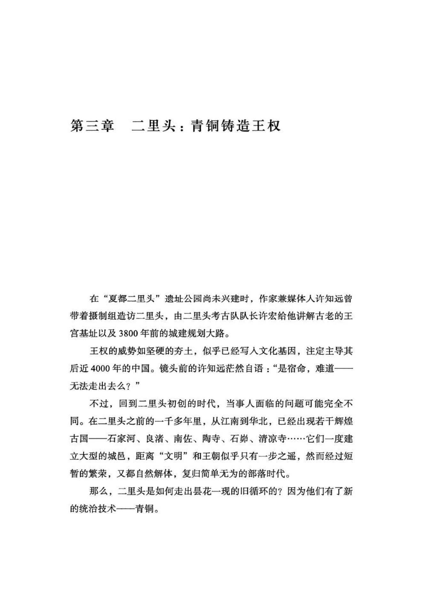
原书阅读器页 064原书物理 PDF 页 062印刷页 50
在二期，二里头人规划了整齐的路网和宫殿区：两横、两纵四条大道，构成“井”字形路网框架；中央是王族生活的宫殿区，东西宽近300米，南北长近400米；宫殿区北边是祭祀区和贵族墓葬区，南边是作坊区，东侧是贵族居住区，平民可能主要住在西侧；大路宽约20米，目前发掘出来最长的是东大路，残留700多米，一段路面上还有清晰的车辙，两轮间距1米左右，应是人力推拉的双轮小车。
二期出现了两座大型宫殿D3和D5（D代表殿，编号是发现的顺序，不是建造顺序），在宫殿区中部偏东，夯土地基，方形大院落。
D5建在约1米厚的夯土地基之上，东西宽约40米，南北长近70米，院内有四排平行的房屋，互相用夯土窄墙隔开。D3的院落更大，可能有三排房屋，但后期破坏严重，已经难以复原。
二里头遗址总平面图[[fn:3]]（图）
在二期，王室有个独特的习俗：把墓葬埋在宫殿庭院内。D5院落就发掘出多座墓葬，最著名的是出土绿松石龙形器的2002VM3（以下简称“M3”），属于二期的晚段，距今约3650年。这座墓穴面积不大（南北长2.24米，东西宽1.19米），墓主是一名三十多岁的男性，上半身尸骨基本腐朽，颈下挂一条用多枚海贝串起的饰物；没有殉葬人，随葬品除了著名的绿松石龙形器，还有多件陶器、红彩漆木器及少量小型玉器和绿松石串珠，铜器则只有一枚青铜铃，放在绿松石龙的背上，内有玉石质的穿孔铃舌。[[fn:4]] 这枚铜铃的造型，与陶寺晚期墓葬中的一件红铜铃类似，但侧面多了一道扉棱。
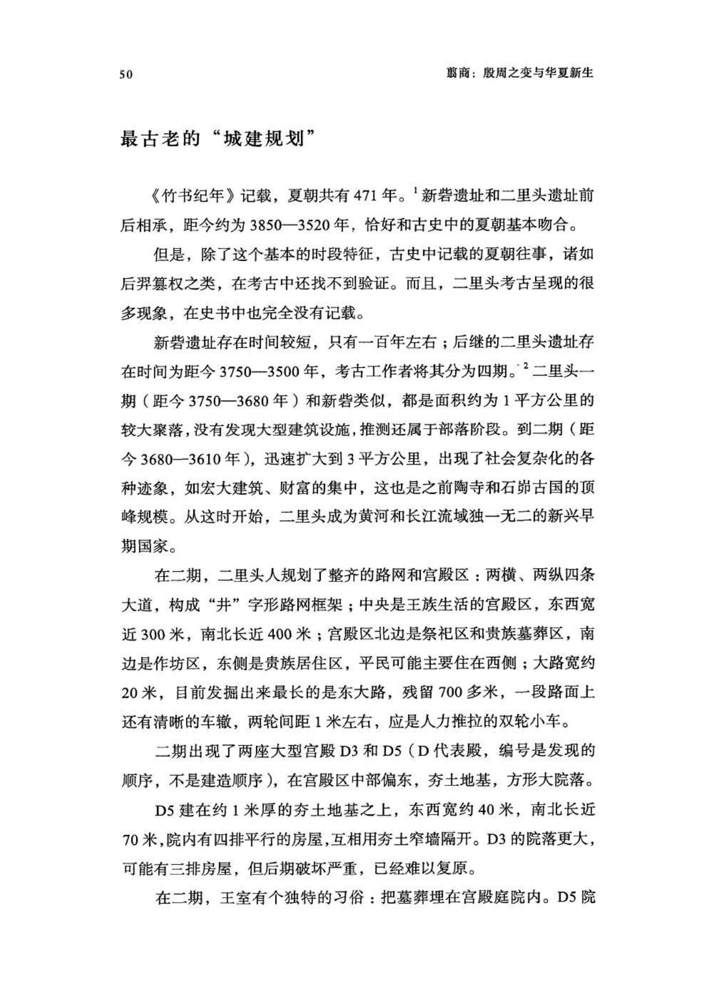
原书阅读器页 065原书物理 PDF 页 063印刷页 51
2002VM3出土的铜铃、铜舌[[fn:5]]（图）
M3墓主下葬时，陶寺和石峁古国已经终结近二百年，但它们的高端文化元素——游龙和铜铃却出现在二里头，说明某些掌握这种技术的人群可能被洛阳盆地的繁荣所吸引而加盟了新兴的二里头都邑。
那么，M3的墓主是某一位夏王吗？
这座墓的规模不算太大，但二里头迄今并未发现更大的墓葬，而且，它属于二里头二期，彼时的夏王朝还没有达到巅峰，能拥有这些随葬品已经极为难得，特别是绿松石大型龙形器，由上千片细小的绿松石嵌片组成，每一片都要经过精心打磨和拼接，需要大量的劳动时间和精湛的技艺，而这些只有在分工程度很高的复杂社会才有可能。这么说来，它的主人也只能是复杂社会的统治者。因此，M3的墓主即使不是夏王，也应当是王族重要成员。
还有不寻常的现象。M3中没有发现任何兵器，而在此前和此后的古国都很难发现没有随葬兵器的高级墓葬，哪怕只是村落或部落社会的男丁也常常会随葬一把石斧钺或几枚箭镞。M3被后世破坏了一角，也许有少量随葬兵器恰好在那一角？但和M3同期发掘的其他墓葬也没有发现任何兵器。这似乎是一个非常和平的人群。
但随着二里头的繁荣和阶层差距加大，曾经导致往日古国解体的危机也会降临二里头。
王家大院
夏王朝的极盛阶段，是二里头文化三期，距今3610—3560年。虽然聚落面积不再大幅扩张，但增加了很多高等级建筑。
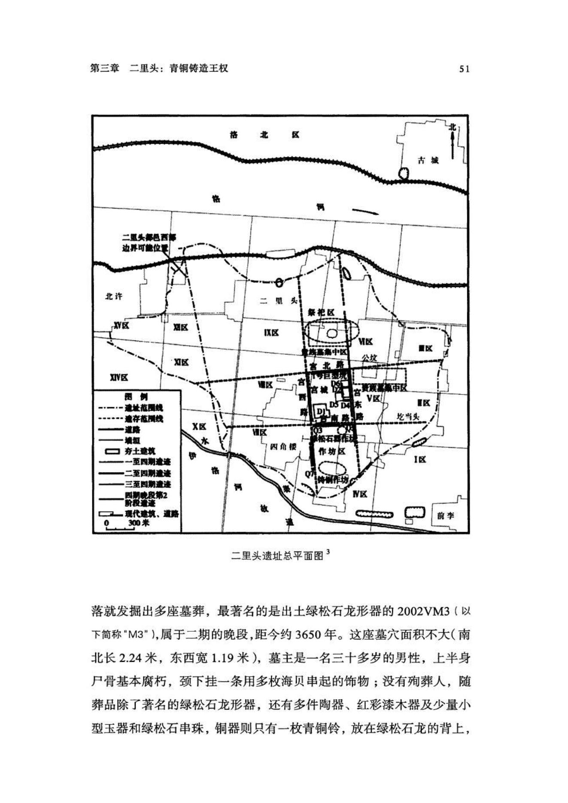
原书阅读器页 066原书物理 PDF 页 064印刷页 52
宫殿区大道内侧修筑了夯土围墙，围起的小城面积约0.1平方公里，被考古工作者称为“宫城”。宫墙不太高大，发掘的底宽只有2米，这意味着墙高可能只有四五米左右，而且顶部很窄，不可能有守城的士兵站立其上，可以看作稍加放大的版筑院墙。
宫城东墙地基有三个缺口，推测是城门遗迹。在城西南角，南墙的7号基址和西墙的8号基址有夯土地基与很多柱洞，像是两座“城门楼”造型。
D3和D5被废弃，新建了多处大小不同的宫殿院落。最显赫的，是宫城西南角的D1和东部的D2：放弃了之前密集成排的房屋格局，每座建筑基本都是一座空旷的大院，院子中央偏北是孤立的主体殿堂，王者气象十足。
D1的庭院接近正方形，边长约100米，东北角向内凹进一块，总面积近一万平方米，比一座标准足球场还要大。因此，院落开工时，得先挖出整体深约1米的基坑，然后逐层夯土，打出坚硬的地基，直到整个院落比地面高出近1米。这种工程需要调动大量人工，显然有王权在规划调度。
院墙内外两侧有柱廊，有陶制的下水管道，可以把院落中的雨水排到东墙外。大门朝南，有大型门房，共三条门道，每条宽度近3米。
主体殿堂的夯土厚达4米，底部夯筑了三层鹅卵石，殿堂高出院落1米，东西长36米，南北宽25米，面积900平方米。从柱洞分布看，这是一座周围有回廊的大型宫殿。
与二期的D3、D5相比，D1放弃了实用、局促的多排房屋结构，改为空旷的庭院和大型单体殿堂，凸显的是礼仪性质和权力的独尊。之前的各种古国，如华北的陶寺和石峁以及南方的良渚，都没有如此规模的殿堂，这意味着二里头统治的疆域和能够调集的劳动力有显著增加，俨然具有王朝气象——虽然还只是雏形期的王朝。
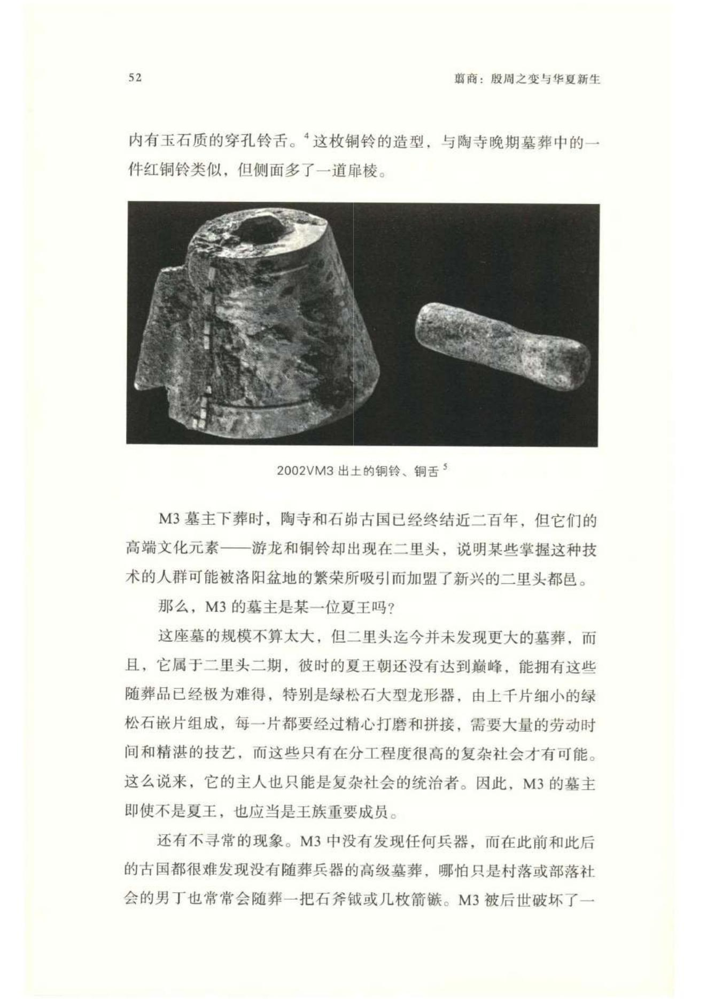
原书阅读器页 067原书物理 PDF 页 065印刷页 53
D1院落的具体功用又颇难解释，它过于空旷，缺少生活设施，不像是王者起居的场所，哪怕是后世的皇宫也少见如此空旷的封闭式庭院，所以比较可能是宗教礼仪性建筑，类似明清时期的天坛和地坛。
D1宫殿（院落）复原图
而且，确实在D1院落中发现了几处用人祭祀的迹象。
在殿堂北侧，有三具呈环形埋葬的尸骨，头部朝着顺时针方向，按墓葬编号分别为M52、M54和M55，其中，有两具是成年女性：M52，仰身，跪姿；M54，俯身，两腿并直，两臂紧贴身体，像是被捆绑。M55，则性别未知，姿势也像是被捆绑，而且埋人的坑穴极窄，整个人应该是被硬塞（踩）进去的，致其两臂脱臼。
D1主体殿堂北部圆坑及墓葬平面图
三具尸骨埋在院落夯土中，包围着一座椭圆形深坑，夯土地基被挖穿，深度在10米以上，应当是水井或者是存储用的“冰窖”，兼有宗教祭祀用途。[[fn:8]]
此外，殿堂西侧还有人祭坑M57，坑穴也极为窄小，宽度仅有
30多厘米，死者仰身直肢，身体微扭曲，发掘报告推测，这应该也是被捆绑后勉强填塞进去的。殿堂东南有M27，死者的手和脚都被砍掉，被折叠成跪坐姿势。
上述五具尸骨都是在庭院地基上挖坑掩埋的，埋葬的时间和宫殿建设基本同期。为观察宫殿夯土地基构造，考古工作者对其进行了局部解剖发掘，夯筑的地基里没有发现尸骨。这说明，二里头可能还没有用人给建筑物奠基的做法，但在建筑落成之后会有小规模杀人祭祀。[[fn:9]] 在后来较长的使用期里，宫殿院落中留下的遗迹并不多，难以判断举行过哪些祭祀活动。
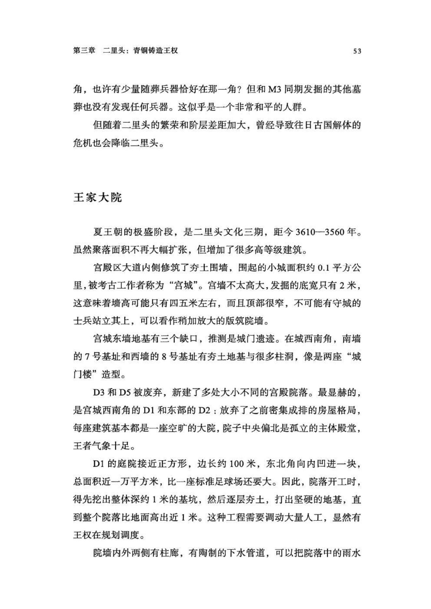
原书阅读器页 068原书物理 PDF 页 066印刷页 54
D2在D1东北方150米处，紧靠宫城东墙，建成于三期末，规模略小于D1，但风格相近：院落南北长70余米，东西宽近60米，围墙带柱廊；院落中央偏北是独体的大型殿堂，南院墙上有门房和门道；在主体殿堂和北院墙之间，也有一个水井，最初发掘时曾被当成一座大墓（M1）和盗洞。[[fn:10]] D2院落内没有发现人祭的遗存。
二里头宫殿区还有一处大型祭祀场所，是一巨大土坑，位于宫城区东北角，发掘者编号为“1号巨型坑”，是宫殿和宫墙的工程取土形成的，从一期末延续到整个二期，后来则被当作祭祀场所使用。经钻探，该巨型坑东西长66米，南北宽33米，总面积为2200平方米，约有五个篮球场大。最深处近7米，总取土量超过一万立方米。由于面积太大，无法整体发掘，只在东侧开了一条解剖性探沟。
解剖显示，坑的边缘很陡峭，坑底有踩踏形成的路面，有房屋和炉灶，局部有积水湿地，还有几处用小猪做祭祀的现场，有些埋葬的是整猪，有些是猪头等部位，集中的一处有三头完整幼猪。
在三期宫墙建设完成后，巨坑被围在宫城内东北角。经发掘，坑底出土有多枚椭圆球形的粪便，主要成分是细碎的灰白色骨渣，像是某种猛兽的粪便。从巨坑所处的环境推测，它可能是宫廷显贵豢养虎豹等猛兽的苑囿。“把猛兽园和祭祀场放在一起的布局，在上古时代很少见。
目前1号巨型坑只发掘了很小的一部分，还无法总结全貌。从已经揭露的部分看，未发现人祭，相对而言，二里头宫廷人群更偏爱用猪献祭。
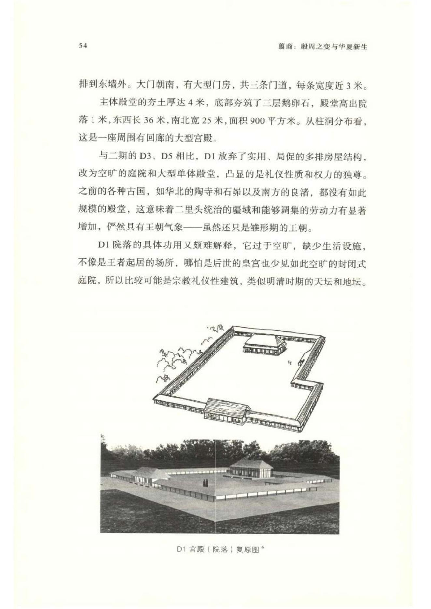
原书阅读器页 069原书物理 PDF 页 067印刷页 55
1号巨型坑2010年发掘探方分布图
宫城外的人祭
宫城北侧，是二里头的祭祀区和显贵墓葬区。在这里，考古工作者发现了一些规格相对较高的墓葬，大多属于三期和四期（距今3560—3520年），仍沿袭着2002VM3的一些特点：墓穴面积不大，有绿松石饰物，没有殉葬人。
有些墓葬埋有青铜兵器和礼器，比如三期的VIKM3，有铜戈、铜钺和玉戈各一件，铜爵一件，铜戈和玉戈比较大，30厘米左右。
墓葬区还有直径1米左右的夯筑黏土墩，有的八个一组，有的18个一组，呈密集的梅花状分布，残存高度约20厘米，周围有多处红烧土痕迹，发掘者称之为“祭坛”。二里头显贵可能是先点火烹饪祭品，然后放到土墩上面献祭。
祭祀场旁边的一条灰沟（94H3）有人祭遗存，主要是散乱的人骨。报告提及，“有不少非正常埋葬的人骨架”，但没有具体数量。M从发表的一张照片看，至少三枚人头骨集中在一起，还有多根大腿骨被从股骨头部位截断，可能是敲骨吸髓所致。此外，沟内还出土了一件“陶龙头”，暗示祭祀对象和龙有关，但可惜没有这件陶龙头的照片和详细报道。[[fn:15]]
还有些零散分布的人祭遗迹，难以判断所处的环境和祭祀过程。比如，在宫殿区西南的VII区发现了一座椭圆形深坑（H10），长径5米，深4米以上，出土人骨架三具和狗骨架一具，距坑口3.5米深处有大量牛肩胛骨制作的卜骨，上面有排列整齐的烧灼痕迹。”这很可能是和占卜行为有关的祭祀。
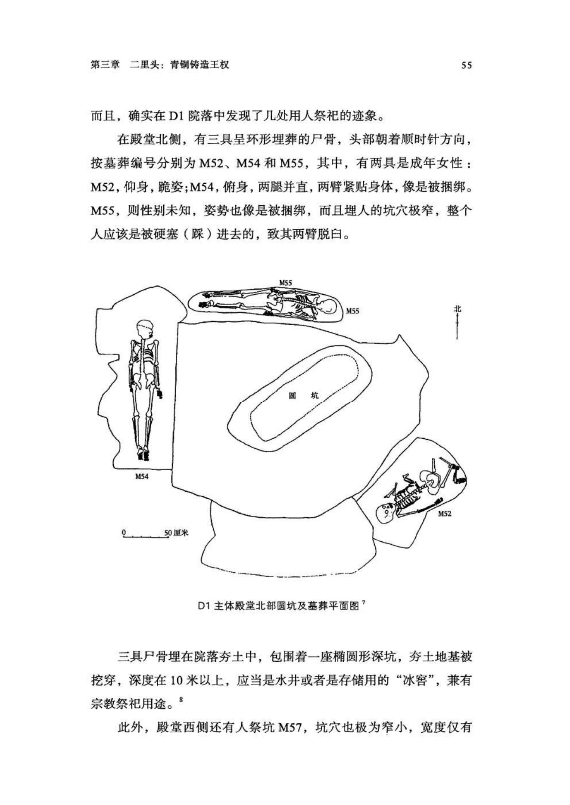
原书阅读器页 070原书物理 PDF 页 068印刷页 56
用牛、羊等家畜的肩胛骨占卜，是华北地区自龙山时代以来普遍流行的通灵预测术：先用火炭烧烫骨头，烫出裂纹（汉字“卜”的甲骨文造形就是骨头上烫出的裂纹），然后从纵横和连续性来判断吉凶。直接在肩胛骨上烫纹有点困难，后来又摸索出新手段，在骨片上钻或凿出许多豆子大的小坑，而且一片肩胛骨还可以有规划地多次使用，以物尽其用。
甲骨上烫出的裂纹被认为神灵降示的预兆，所以占卜之前要给神灵献祭。有些贵族很尊重用过的甲骨，会集中进行埋藏，并杀人和牲畜同埋，这应当也是对降示预言的神表示谢意。
从城市规划和宫殿建筑看，二里头-夏朝不仅有强大的王权，还掌控着很多对神的献祭权，而且贵族也有自己的祭祀（包括人祭）活动。
除了特意的人祭，二里头还有在灰坑（垃圾坑）和地层中随意抛弃尸首甚至零碎人骨的迹象。根据1959—1978年的发掘报告，三期和四期中有人骨的灰坑数量大增，比例均超过10% ；在1999—2006年的发掘中，共发现尸骨灰坑39处，绝大多数（35处）属于第四期。
表四：1959—1978年二里头发掘灰坑中有尸骨的比例
| | 一期 | 二期 | 三期 | 四期 |
| ----- | ------ | ------ | ------ | ----- |
| 灰坑总数 | 36 | 75 | 138 | 129 |
| 有尸骨灰坑数 | 0 | 4 | 23 | 16 |
|尸骨灰坑在总数中占比| | 5.3% | 16.7% | 12.4% |
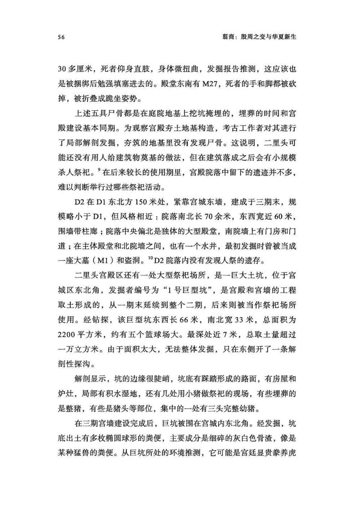
原书阅读器页 071原书物理 PDF 页 069印刷页 57
截至2020年，在二里头遗址发现的墓葬总数为400多座，[[fn:19]] 代表正常死者的样本数量；而据不完整统计，埋有尸骨的灰坑有80座（处）左右，而且有些坑中不止埋有一具人骨。可见，死于非命且得不到正常埋葬的比例颇高。
有研究者认为，这种灰坑中的尸骨是人祭遗存。如但祭祀应当有比较正规的场所和仪式过程，如果尸骨只是随意抛掷，或者与各种生活垃圾混在一起，则很可能只是身份卑微的人暴尸于街头。
这反映了新兴的“都市现象”：当国家权力和统治阶层出现时，也会伴生庞大的贱民群体，或来自被俘虏的异族，或部落和宗族体系因各种原因被打散，而成为豪门贵族的私家奴婢或国家管制下的贱民，以及都市中的乞讨人群。而一旦丧失部落和宗族这样的互助组织，他们往往会被任意虐杀或死于饥病，并被随意抛尸，从而成为灰坑或地层中的尸骨。
在国家出现之前的村落或部落生活中，也会有人因贫富差距而成为贱民，有些甚至可能会被村落或部落集体排斥而死于非命；但到早期国家出现之后，特别是二里头这种青铜王朝，都城的贫富悬殊则已经非常剧烈，一面是各种宏大建筑和兴旺发达的手工产业，一面是大量赤贫者抛尸街头，各种残酷现象也最为集中。
铸铜场内的人骨
在夏朝一二里头之前，各地发现的铜器都是零星小件器物，数量极少，人为铸造的青铜合金更是稀少。
在夏朝存续的五百年间（这是宽泛的标准，包括新砦的一百年，以及夏商更迭的半个世纪），铸铜技术持续而稳定地发展了起来，从单纯的红铜，到铜、锡、铅三元合金的青铜，从小件器物到较大的青铜礼器（容器）、兵器，夏朝开创了中国的青铜时代。
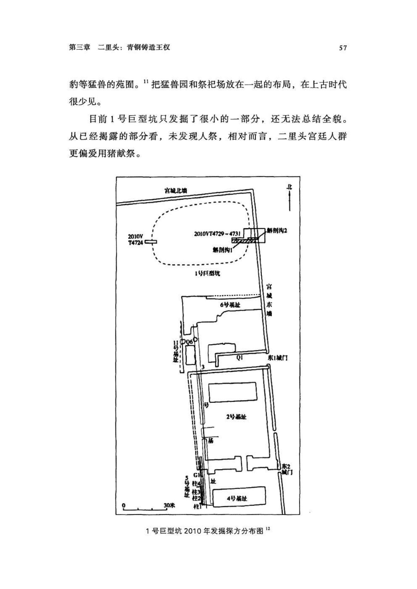
原书阅读器页 072原书物理 PDF 页 070印刷页 58
新砦遗址曾发掘出两块红铜小残片，一块属于铜小刀，另一块可能属于某种容器。[[fn:21]] 二里头人则继续发展了冶铸铜技术：在一期，发掘出一块铜炼渣和两件残损的铜小刀，经鉴定，其中的一件小刀几乎是纯铜，另一件则属于锡青铜，其中含铜83.29%，含锡16.28%，含铅0.43%。[[fn:22]]
二里头人掌握的青铜技术是一个里程碑：添加了锡和铅的青铜，熔点更低，熔液流动性更好，更容易冶铸，而且硬度也更高。这两件残小刀都是抛弃在地层中的垃圾，二里头一期墓葬没有发现任何铜制随葬品，但有绿松石制作的小珠子饰物，应当是开采铜矿的副产品。
二里头都邑初具规模后，南侧有了专门的青铜冶铸区，和宫城隔着南大路相望。在二里头二期，宫城墙尚未建设时，冶铸作坊区已经建起1.5米厚的夯土围墙，看来这里的防御工作更重要。
冶铸区面积约两万平方米，比一座标准操场还大。有不止一处作坊，出土有和冶铸有关的各种物品，如陶范、石范、陶坩埚的碎块，以及散碎铜块、矿石、炼渣、锡片、木炭。
1983—1984年发掘的一处较完整的铸铜作坊，有一座半地穴式的长方形大房子，编号84YLIVF9，室内地穴深80厘米，东西长度超过20米，地面上有红烧土区域，有铜溶液泼洒形成的绿铜锈面。发掘者推测，这是一座浇铸工场，红烧土面是因工匠烧制陶范形成的。
房子的南侧还有三处可能是露天浇铸的痕迹，分别编号Zl、Z2和Z3。在它们和F9之间，有两间夯土小房子F2，室内地面上有火塘以及支撑烘焙的泥土柱，应当是熔铜或者烧制陶范的工房。
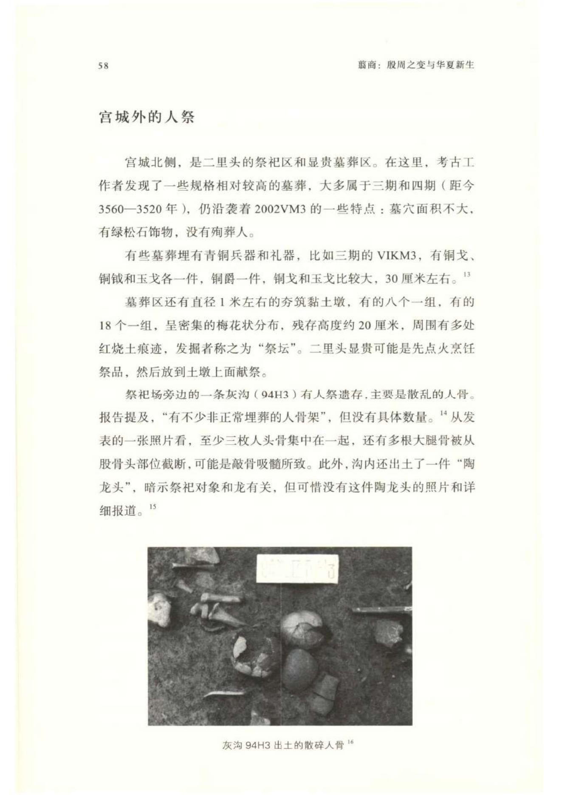
原书阅读器页 073原书物理 PDF 页 071印刷页 59
这处作坊在二期经历过两次翻新重建，在三期又重建过一次，所以形成了重叠的工作面地层，每一层都有铸造遗迹和遗留物。
在作坊F9下面，考古工作者发掘出13具尸骨：初次建造时，北墙下埋了五名儿童，室内地面埋了一名成年人；第一次翻修时，工作地面埋入三名成年人；第二、三次翻修时，则各埋入两人。[[fn:24]]
这些人是正常死者吗？在二期，二里头的显贵人物会被埋在宫殿庭院里，但铸铜作坊的特点则是，每次埋人都发生在新建和翻修的时候。所以，这些人应该不是正常死亡，否则很难解释时间为何这么巧。
可惜，这处作坊并未留下太多发掘记录和照片资料，比如，死者尸骨的姿势、有无伤痕和随葬品等。但从常识推测，铸铜作坊烟熏嘈杂，熔铜汁不断滴落到地面上，显然不是埋葬正常死者的地方，祭祀人牲的可能性较大。
铸铜作坊旁边有一座祭祀坑，编号84YLIVH99（以下简称“H99”），原是废弃的水井：底层埋了一具被肢解的人的尸骨，被碎尸成很多块，散落在坑中有八层之多，还伴有兽类（可能是猪）的骨肉碎块。献祭者很可能先是将其和猪一起烹饪，分食，然后将零碎的骨头投进坑中的；在坑的最上层，是一具全尸，双腿蜷曲侧卧，两手合掌放在腹前，像是腿和手被捆绑着活埋的。
在作坊附近，还发现了一些相对正常的墓葬，随葬有陶器以及铜爵等少量铜器，应当是冶铸作坊经营者的墓区。[[fn:25]]
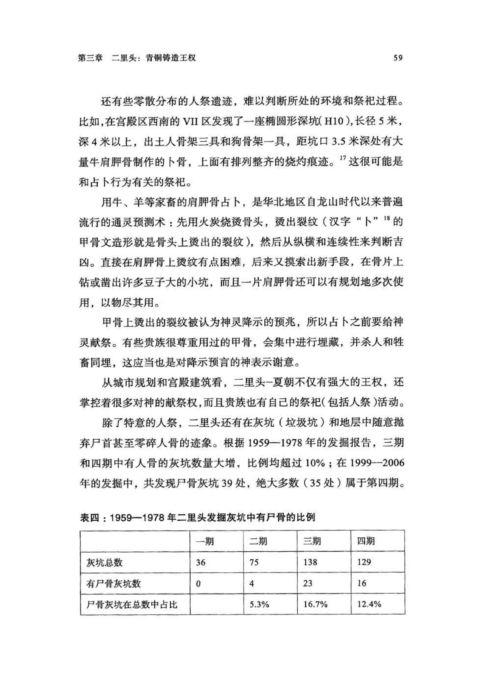
原书阅读器页 074原书物理 PDF 页 072印刷页 60
到了三期和四期，铸铜作坊更加繁荣。此外，临近宫南路又出现了一座绿松石加工作坊。在二里头，铜器、铸铜产业经常和绿松石饰物相伴，说明人们对铜矿极为重视，开采铜矿的副产品，自然也要物尽其用。
除了青铜冶铸技术，二里头人还创作了一套有礼仪色彩的酒器，如三足的爵、大口束腰的觚、三袋足的斝和盉等。这套酒器被商、周继承，是中国青铜时代的代表器物。
不过，在青铜技术还没发展起来的时候，这些酒器都是陶制的。新砦-二里头人普遍嗜酒，喜欢制造专门储酒、温酒、斟酒的器皿，哪怕是寒酸的小墓，也常有陶制酒器。看来，他们粮食充足，普通人也有余粮来酿酒。
新砦阶段已经有了陶盉和陶觚。到二里头一期，则出现了最早的陶爵，高约20厘米，三条短足，一只宽带状的耳（扳手），口部向两端外翘，形成“流”和“尾”，腹部和耳上有带状纹饰。
爵的造型繁复，且颇为沉重，用它的“流”对着嘴饮用并不舒适。后世人已经不知道它到底是怎么使用，有人猜测它是调酒的器具。
还有上大下小、呈喇叭口状的陶觚，它的具体用途也很难判断。也许张大的口部有“醒酒”作用。无论如何，这些复杂、成套的酒具代表着隆重的仪式感，说明酒不仅是饮料，还是社交礼仪活动的重要内容。
到二里头后期，青铜铸造技术突飞猛进，随葬品中出现了多件铸铜的爵、盉、斝、鼎，主要是用作酒器，造型模仿陶器，用于彰显主人尊贵的身份，可以称为“铜礼器”。
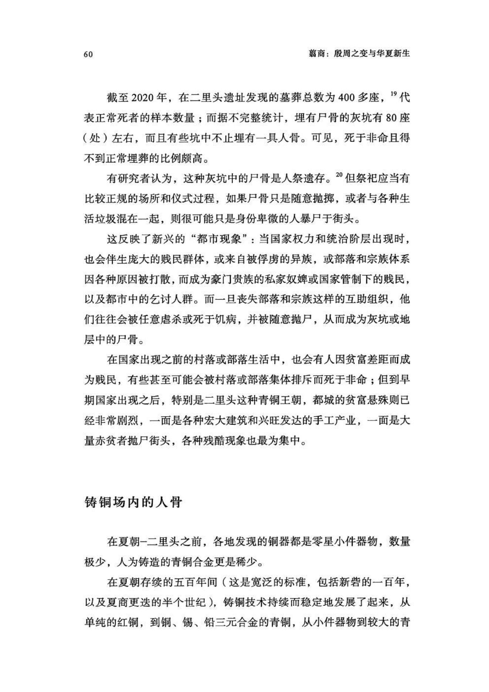
原书阅读器页 075原书物理 PDF 页 073印刷页 61
比起之前的小刀、铜铃之类的小件，铜礼器体型变大（一般高20厘米以上），造型复杂，需要多块陶范拼接铸造。基本都没有纹饰，器壁很薄，厚度只有1—2毫米，可见当时铜料很珍贵，即使统治者也承担不起厚重的铜器。
新砦出土的陶盉和陶觚：陶盉有三只袋足，适合烧煮加热，但细小的“壶嘴”显然不适合煮粥，如果只为烧开水，它的复杂造型又有点多余，所以有学者推测它是用来温酒的，酒才当得起如此重视（图）
二里头一期出土的爵（左）和觚，出自M54：在流行上千年之后，酒爵逐渐退场，但它被引申出了“爵位”之意，代表世袭的高贵身份（图）
二里头遗址已发现的青铜器约有200件，包括容器、兵器、乐器、礼仪性饰品和工具等。其中青铜容器是迄今为止所发现的中国最早的成组青铜礼器，除一件鼎外，主要为仿造陶器制作而成的酒器。二里头文化开始的青铜容器的铸造，需要由多块内、外范拼合铸出整器，显示出原创性与独特性。这种合范铸造技术的出现在中国金属冶铸史上具有划时代的意义，开启了中国青铜时代的先河。[[fn:26]]
在三四期阶段，还出现了全新的铜兵器，如铜钺和铜戈。铜钺的造型可能是从玉石钺来的，但铜戈比较特殊，此前很少有类似戈的石器，属于古代中国比较独特的兵器。
中国的铜蕴藏量不太丰富，铜器成本较高，是上层社会的奢侈品，对二里头普通民众来说，使用最多的还是石器和骨器。石器可能是在洛河中采集砾石敲打制造的。到后来的商朝、西周以至春秋，最基本的农具还是石器。石制农具和工具被完全取代，要到冶铁技术已经普及的战国。
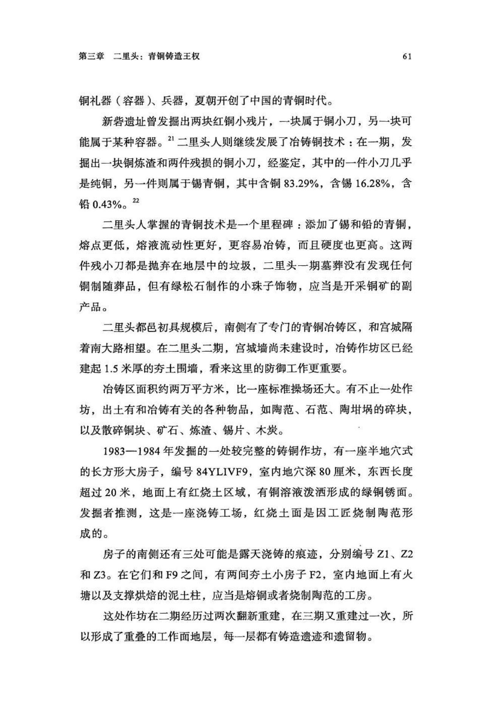
原书阅读器页 076原书物理 PDF 页 074印刷页 62
石器时代和青铜时代都是常用的词，但这两个词的含义并不对等。青铜器从未完全淘汰石器，它更多体现的是上层人生活的改变，就像古人发明文字后，社会上的多数人仍是文盲。社会的发展水平往往是被占人口少数的精英阶层代表的。但我们不能因其数量少而低估青铜，正是它铸造了华夏的最初文明和第一王朝。
青铜催生文明
“文明”是人类学和上古史学者经常讨论的课题。石器时代的各种人群现象被称为“文化”，但它并没有严格的定义，只要是人制造的物品和遗迹都是“文化”，旧石器时代也是文化。中国的新石器文化主要以陶器工艺和造型分类，因为陶器制造量大，在遗址中最常见（多是碎裂的陶片，但有些可以拼合），造型特征也最明显。不同地域的人群使用的陶器不同，由此很容易区分出不同的文化；即便同一个人群，在不同的时期，陶器特征也会进化，由此还可以细分出时段。所以中国的考古学者最重视陶器形制研究。此外，不同文化中的玉器、石器、建筑和墓葬也会各有特点。
比起文化，文明则要高端得多。它标志着人类告别原始状态，和动物界的距离也更远了，进入可以加速发展、与现代社会一脉相承的轨道之中。当然，进入文明时代后，以陶器为基础的文化分类仍然存在，因为它最能反映普通人的生活。
学术界以往对“文明”的界定比较严格，其中有三个关键要素：城市、冶金技术和文字。按这种标准，商代晚期的殷商阶段属于文明，因为有可以释读的甲骨文；后来也发现过早商阶段的甲骨文材料，但极为稀少。总体来说，商代符合严格的文明标准，争议不大。
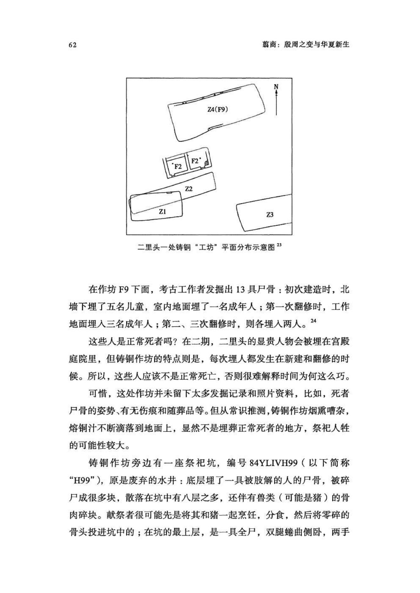
原书阅读器页 077原书物理 PDF 页 075印刷页 63
但商代之前的夏-二里头，缺少文字要素；再早的新石器末期古国，如石峁、陶寺和良渚等，有万人聚居的大型聚落及明显的阶级分层和宏大建筑，却没有或极少有铜器。这些都不符合严格的文明标准。
近些年，有学者提出了更宽泛的标准，认为只要有大型城邑，或者叫“复杂社会”，就可以称之为“文明”。它的原理是，大量人群聚集在一起生活，会形成相对复杂的职业分工和社会分层，这种组织协作能力是人群继续发展的重要基础。按照这种标准，距今5000— 4900年前的良渚古国也可以称为“良渚文明”。[[fn:27]]
宽泛或者严格的标准各有意义，不必相互否定。但需要注意的是，符合宽泛“文明”标准的多数古国（4000年之前的）大都在短期繁荣后凋零了，它们建设“复杂社会”的经验显然不够完善，缺乏长期发展的能力，而且各古国建成“复杂社会”也都是自发的，相互间少有传承。当然，古国文明也并不是完全孤立的，有些文化元素辗转在古国之间传递了下来，比如良渚古国的几种典型玉器就传承到了石峁、陶寺以至商代：石峁的浮雕游龙变身为二里头的绿松石龙图腾；冶炼红铜和铸造小件铜器的技术也辗转传递到了新砦-二里头。
草蛇灰线，潜流伏脉，这是4000年前古国文明的“传承特点”，很不明晰。相比之下，夏-二里头与后面的商、周王朝一脉相承，没有断档。商人征服二里头-夏，接受整个夏朝遗产的过程，在考古成果里表现得很清晰。
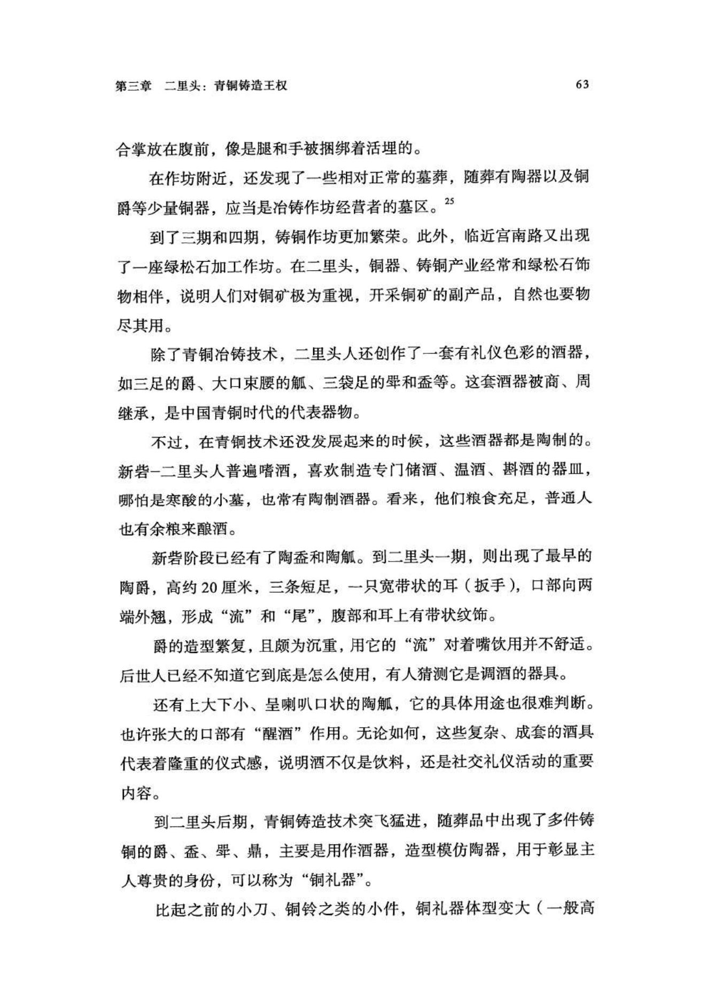
原书阅读器页 078原书物理 PDF 页 076印刷页 64
在二里头之前，大型城邑（古国）已经有过若干座，狭义文明标准的第一项要素已经有了，但不够稳定。二里头的创新是第二项，也就是青铜冶铸技术，有了它，大型城邑（古国）才能维持和发展下去，让第一项要素真正确立，并继续发展出第三项——文字。
青铜产业需要更庞大的共同体人口基础和更复杂的分工协作体系。从采矿、运输、冶炼，到配比合金、制范铸造，需要一系列专门技术以及众多人员和组织的协作，而这是复杂社会才能供养、维系和发展的。
中国的铜矿蕴藏较少，青铜器物很难真正普及千家万户，而青铜对于中国早期国家的最重要意义，恰恰在于它数量少，价值高：青铜礼器显示阶级差别秩序，而青铜兵器戈、钺和镞对木石兵器有压倒性优势，王权借此获得武力保障。这是“文明”或者“复杂社会”维持稳定、避免解体的基础。[[fn:28]]
对比之下，石器时代的古国王权，并没有凌驾于民众阶层之上的武装优势，统治者可以用玉礼器表现自己的高贵奢华，但玉兵器的战斗力并不能超越石兵器。当良渚、陶寺和石峁这些石器古国走向繁荣时，急剧加深的贫富差距会导致底层民众揭竿而起，统治阶层和初具规模的复杂社会也就毁于一旦。
二里头以往的一千多年里，从长江中游、江浙到华北，众多古国兴起又解体。到三期时，二里头也进入了古国盛极而衰的节点：统治者豪奢营建，底层人群极度贫困，劳役无休，对立情绪终将引爆。恰在此时，成熟的青铜技术让二里头得以续命，社会上层继续维持其统治。
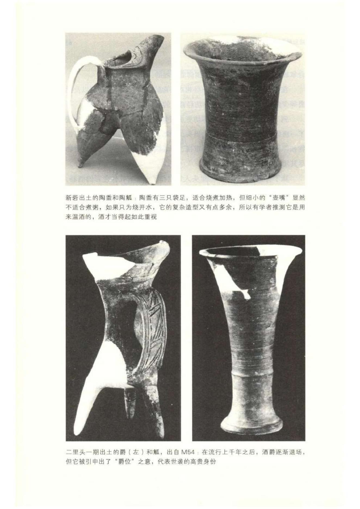
原书阅读器页 079原书物理 PDF 页 077印刷页 65
三期之初建设的宫城城墙，保卫的只是居住在宫殿区的上层人群，而非整个二里头古城。显然，这是二里头内部阶级矛盾的产物。二期显贵墓葬中没有兵器，显示阶级矛盾还不激烈；三期墓葬却多次发现铜戈和铜钺，说明上层社会武装程度明显提高，及时发展了镇压底层社会的能力。
显贵的武装优势也是各种宏大工程的保证。三期聚落面积并没有比二期明显扩大，表明人口没有明显增长，但宫墙却在此期完工，多座殿堂也升级换代，青铜冶铸区显著扩大。显然，这是对民众控制力强化的结果，换句话说，统治者索取的贡赋和劳役更多了。在这些物质基础上，二里头才发展成为真正意义上的夏王朝。
石器时代古国繁荣难以超过二百年的周期律，就这样被二里头的青铜兵器破解了。
有限人祭与二元制社会
在龙山时代的华北，人祭和人奠基现象比较普遍。这种风俗也延续到了二里头，不过从已有的考古发掘来看，二里头的人祭行为并不算太泛滥：
一，各期的墓葬没有发现殉葬人，也没有事后祭祀和埋入人牲的现象。和墓地有关的遗迹，只有94H3灰沟有人祭遗存。
二，宫殿区建筑没有发现人奠基，只在D1庭院内发现了五具献祭尸骨。
三，铸铜作坊F9有用于奠基和献祭的十多具尸骨，旁边的祭祀坑H99也有两具。从时间上，铸铜作坊的人祭行为出现得更早（二期），宫殿的人祭行为属于步其后尘。
二里头-夏朝的规模超过以往任何古国，且稳定地存续了近四百年，而在其中心都邑只发现上述人祭现象，可以说数量是很少的。此外，二里头遗址整体保存情况比较好，在夏朝覆亡之后，这里一直没出现过城市，也没有大的河流改道和人为盗掘，遗址很少遭到后期破坏。
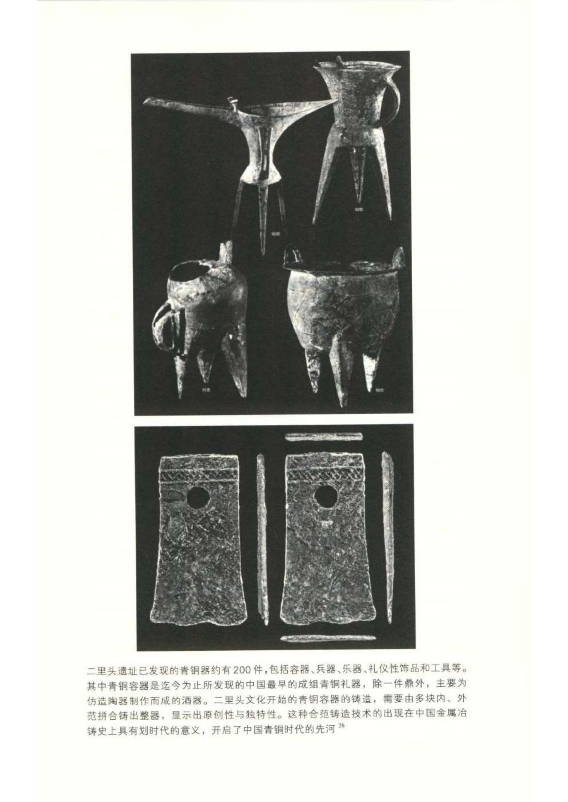
原书阅读器页 080原书物理 PDF 页 078印刷页 66
考虑到上述因素，可以说，二里头一夏朝的民间虽存在人祭风俗，但尚未建立以人祭为基础的“国家宗教”，王室统治者的人祭数量并不比民间更多。
纵向对比，二里头的人祭规模和陶寺古国比较相似，和石峁、清凉寺、王城岗则截然不同。这说明，在华北地区不同的古国-早期文明中，人祭的繁荣程度有所区别。
从人祭地点看，二里头宫殿区的人祭行为相对较少，东北角的巨型坑中甚至只用猪祭祀。相对而言，铸铜作坊区的人祭数量较多，形式也很残酷，有肢解分食现象，而规模浩大的D1宫殿内的人牲数量尚不及铸铜区的一座厂房。这些区别可能显示了二里头内部不同人群之间的文化差异：在宫殿区内的居住者中，人祭文化不太流行，而从事铜器冶铸的群体比较崇尚人祭。
在现代人的观念里，上古的青铜制造业应当在王权的直接控制之下，但这很可能是借后世的官僚制和君主集权制的运行规则来想象上古。二里头-夏朝还属于王权肇建、蛮荒未褪的时代，不同行业多属于特定的族群世袭经营，他们往往拥有较高的自治权。
在宫殿区尚未修筑宫墙时，二里头的手工业作坊区已经建起了围墙。当时属于二里头二期阶段，铸铜作坊规模还不算大，也没有发现青铜兵器，那为何要把作坊区的安危放在王宫之前？可能的答案是，作坊区的围墙是手工业族群自己兴建的，他们需要承担自己的防务，并且有这种资源和实力。实际上，青铜冶铸者的宗教风俗也有别于宫殿区，这也是他们族群整体自治的表现。
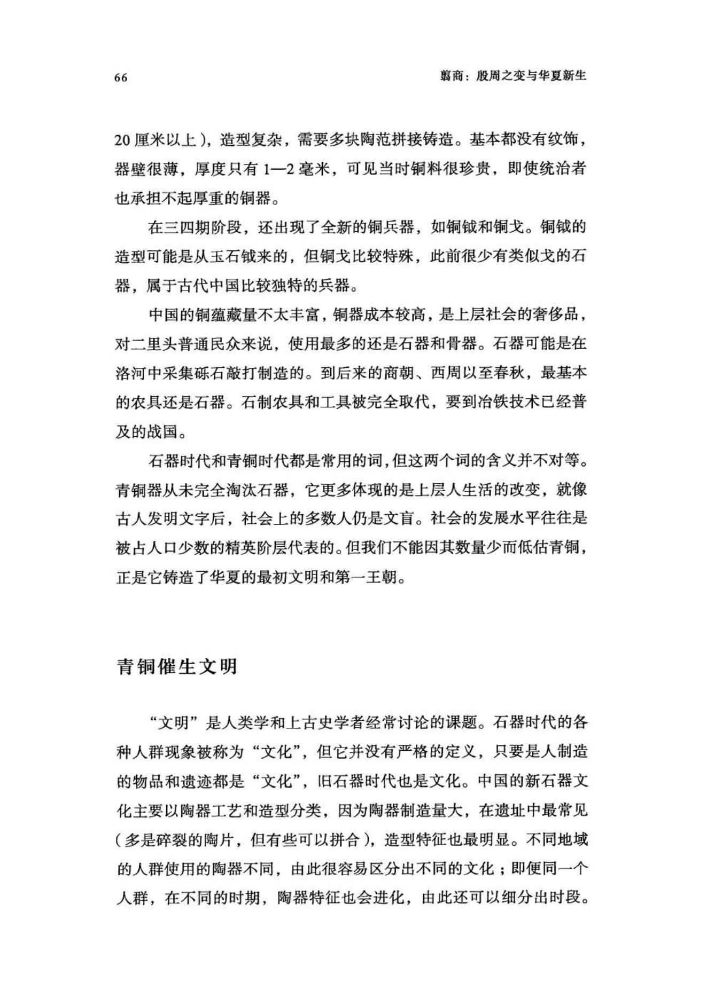
原书阅读器页 081原书物理 PDF 页 079印刷页 67
二里头从未发现大型城墙体系，作坊区和宫殿区有各自独立的围墙，这种现象被许宏先生称为“大都无城”。它的根源，很可能是宫殿和手工业族群的二元并立模式：冶铸人群承认宫廷王权的权威，但自主管理族群。
而且，二里头的青铜技术一直处在封闭之中，几乎从未向外传播。在近四百年里，二里头之外几乎从未出现成规模的青铜铸造产业，二里头风格的大件青铜制品（包括礼器和兵器）也很少出现在外地[[fn:29]]——除了一个遥远而孤立的南方殖民地。似乎二里头-夏朝的青铜生产者以及王室和豪门都把青铜器当成秘不示人的宝物，从不与外人分享、交易。
以上是考古提供的二里头古国概况。
关于夏朝，古史只有少量记载，如《史记•夏本纪》说，大禹准备把首领职位传递给益，那位向民众推广稻种的助手，但在禹死后，民众都愿意服从禹的儿子启，于是，启建立了家族王朝——夏朝。
及禹崩，虽授益，益之佐禹日浅，天下未洽。故诸侯皆去益
而朝启，日：“吾君帝禹之子也。”于是启遂即天子之位，是为夏后帝启。
此外，《史记》主要记载的是历代夏王的名号，其他古书则还记录了夏朝前期的动荡事件：第四王“相”被有穷氏的后羿取代，后羿又被伯明氏的寒浞篡权，寒浞屠灭了后羿和夏王相家族，而相的遗腹子少康借助母族有仍氏和有鬲氏的势力，灭掉了寒浞，恢复了夏朝。[[fn:30]]
这起夏朝的“王子复仇记”，在新砦和二里头考古中难以得到验证，但在这个故事里，夏王朝内部有各种部族，如有穷氏、伯明氏、有仍氏、有鬲氏等，且都有自己的世袭首领，应当是当时社会的真实反映。夏朝还不是后世人观念中的大一统政权，内部族邦林立，二里头古城实则是夏王部族的领地，因稻作农业而人口繁盛，因青铜兵器、奢侈品而强大且富有吸引力，周边各部族甘于充当它的附庸；但夏王室—二里头人对这些臣服部族并没有太多的直接控制，也未能在语言和文化上把中原地区整合为统一体。夏王朝的故事虽在各部族中流传，但各部族仍保持着自己的共同体生活。
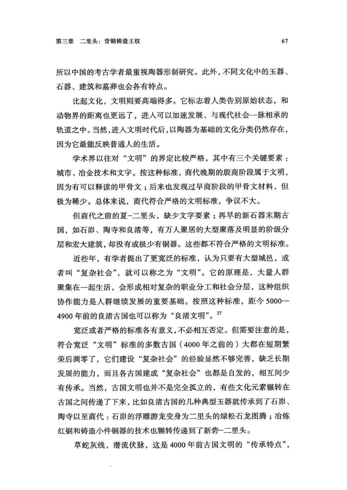
原书阅读器页 082原书物理 PDF 页 080印刷页 68
这也能解释为何二里头的青铜器极少出现在古城之外。夏王朝比较保守和封闭，不屑于对外掠夺与扩张，也不想建立广土众民的真正王朝。也许，是当初后羿和寒浞的动乱给了夏王室以教训，尽量不要和其他部族走得太近。
综上，二里头-夏朝建成了一个大型聚落和复杂社会，而且依靠青铜技术保持着长期稳定；由此，一千多年来古国兴废无常的难题终于被破解。但它的保守多少影响了其华夏第一王朝的声誉，而整合黄河下游形形色色的各族邦的工作，还有待后面的王朝。
附录：青铜秘史
在新石器时代晚期，很多遗址都发现过零星、小件的铜器，如铜片、小铜刀和铜锥等。这应该是古人在偶然状态下的收获，比如把含铜的矿石放到陶窑中烧，然后发现了小块的铜，并进行初步加工，但离实用的青铜还有很远的距离。
单纯的铜是红铜，熔点较高，熔化后流动性很差，难以铸造成大件或精细的物品。而且，纯铜质地较软，用途有限。要降低熔点、提高铜熔液的流动性，需要加入锡或铅；要提高铜的硬度，则需要加铅。
不同用途的铜器，锡和铅的比例也不一样。铜礼器需要有精致的造型和繁复的花纹，锡的比例要稍高；铜兵器要有较高的硬度，需要提高铅的比例，但铅过多又会造成青铜器变脆，容易碎裂。这些比例关系需要技术人员在反复试错中摸索。
从矿石中炼出单纯的某种金属并非易事，不过有些矿石是多种金属共生，幸运的话能遇到铜锡共生或者铜铅共生且比例碰巧合适的矿石，烧炼这种共生矿石，则有可能得到较硬、较细腻的铜合金。但这种偶然的成功难以复制，当矿石中的元素比例改变，炼出的铜就不符合需要了。所以，青铜的冶炼和铸造技术有很高的门槛。二里头铸造区发现过一小块锡片，这说明他们已经能单独提炼锡来与青铜配比。殷墟还发现过超过一吨的铅锭窖藏，这也是为冶炼青铜准备的原料。
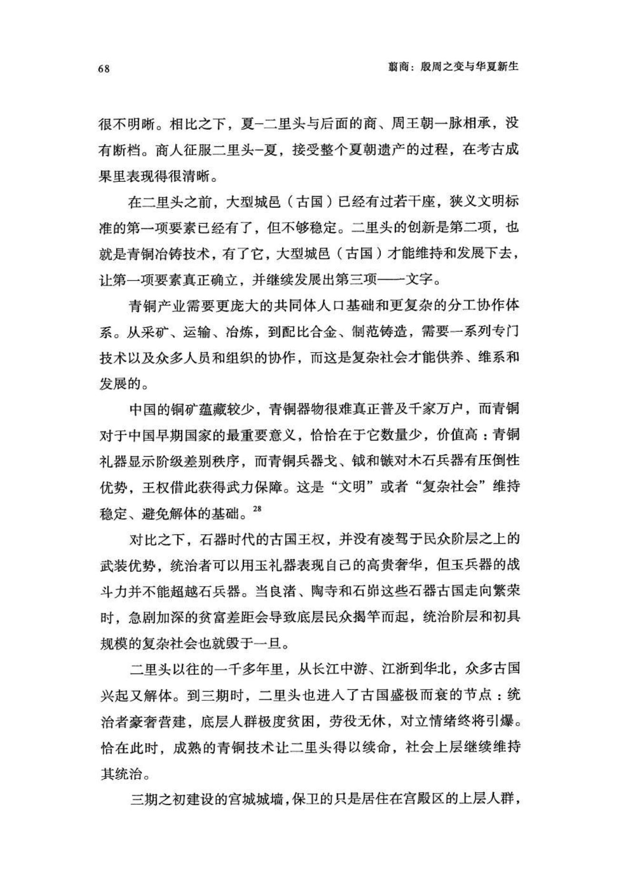
原书阅读器页 083原书物理 PDF 页 081印刷页 69
石器时代通往青铜时代的大门看似很宽，实则很窄。这些困难和偶然性，又催生了关于金属冶炼的神秘玄学观念，认为某些神灵会影响冶炼的成效，所以人们会用不同的形式进行祈福，请神赐予高质量的产品——从夏到商，冶铜区的人祭遗存都比较密集，直到钢铁时代，冶炼仍是充满着不确定性和神秘色彩的活动，甚至有工匠舍身投入炼炉、获得高质量金属的传说。
注释
1《史记•夏本纪》裴骃集解引《汲冢纪年》曰：“有王与无王，用岁四百七十一年矣。”《汲冢纪年》就是《竹书纪年》。
2仇士华：《14C测年与中国考古年代学研究》，中国社会科学出版社，2015年。
3赵海涛、张飞：《二里头都邑的手工业考古》，《南方文物》2021年第2期。
4中国社科院考古所二里头工作队：《河南偃师市二里头遗址宫殿区5号基址发掘简报》，《考古》2020年第1期。
5许宏：《二里头：中国最早的“核心文化”》，《世界遗产》2015年第8期。
6杜金鹏、许宏主编：《偃师二里头遗址研究》，科学出版社，2005年。
7中国社科院考古所：《偃师二里头：1959年—1978年考古发掘报告》，中国
大百科全书出版社，1999年。
8这个“圆坑”在1972年和2001年两次被发掘，分别编号为1972VH80和2001VH10
9这种建筑落成后再埋入的人牲，性质介于奠基和人祭之间，这说明两种人祭
方式间并没有太明确的界限。
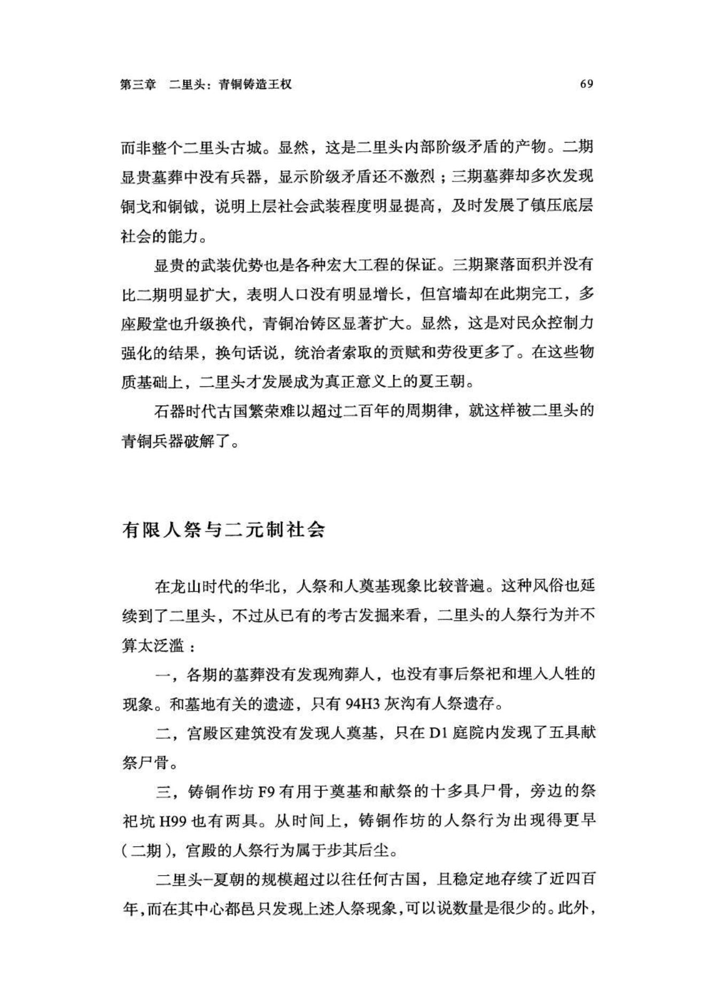
原书阅读器页 084原书物理 PDF 页 082印刷页 70
10中国社科院考古所：《二里头：1999—2006》第二册，635页。
11中国社科院考古所二里头工作队：《河南偃师市二里头遗址宫殿区1号巨型坑的勘探与发掘》，《考古》2015年第12期。
12同上。
13中国社科院考古所：《偃师二里头》，第241、251页。
14郑光：《偃师二里头遗址》，《中国考古学年鉴1996》，文物出版社，1998年，第167页。
15杜金鹏：《二里头遗址第二期考古的主要成就》，《中原文物》2020年第4期。
16同上。
17岳洪彬：《偃师二里头遗址》，《中国考古学年鉴• 1995》，文物出版社，1996年，第163页。
18《说文》曰：“卜，灼剥龟也。象灸龟之形。一曰象龟兆之从（纵）横也卜，最早见于甲骨文，本义为灼甲骨取兆以占吉凶。
19参见许宏等《二里头遗址聚落形态的初步考察》，《考古》2004年第11期；朱其宇《中原地区二里头文化时期墓葬研究》，河南大学2020年硕士论文，第16页。
20李志鹏：《二里头文化祭祀遗迹初探》，《三代考古》第二辑，科学出版社，2006年。
21中国社科院考古所：《新密新砦》，文物出版社，2008年，第224页。
22中国社科院考古所：《偃师二里头》，第41页。
23杜金鹏：《二里头遗址第二期考古的主要成就》。
24中国社科院考古所：《中国考古学•夏商卷》，中国社会科学出版社，2003年，第112页。
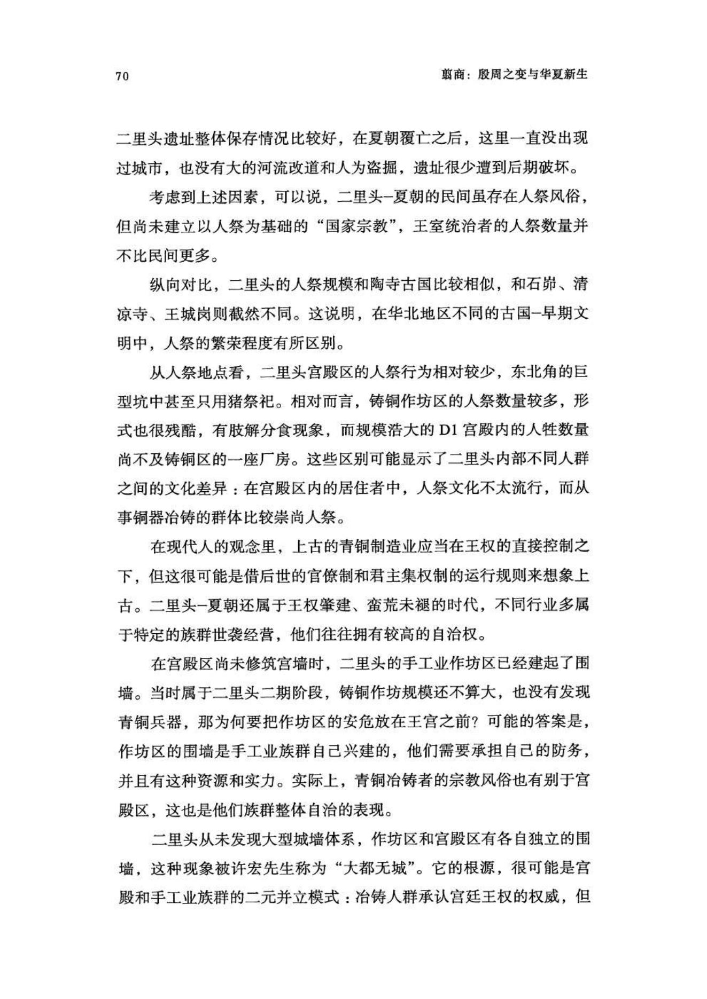
原书阅读器页 085原书物理 PDF 页 083印刷页 71
25杜金鹏：《二里头遗址第二期考古的主要成就》。
26图片分别引自许宏《二里头：中国最早的“核心文化”》和《世界遗产》编辑部《二里头新探》，《世界遗产》2015年第8期。
27关于中国早期文明认定标准的讨论，可参考张光直《论“中国文明的起源”》，陈星灿整理，《文物》2004年第1期。
28在缺少青铜技术的人类文化中，黑曜石可以部分代替青铜兵器的功能：它是火山喷发形成的玻璃质岩石，断茬锋利，价值较高。在上古中东地区以及欧洲殖民者入侵前的中南美洲，黑曜石都曾是高端兵器原料。但中国的黑曜石较少，在新石器时代几乎没有它的踪迹。
29许宏：《东亚青铜潮》，生活•读书•新知三联书店，2021年，第60页。
30参见《左传•襄公四年》，《史记索隐》引用时有所增减。另可见《史记正义》引《帝王世纪》。
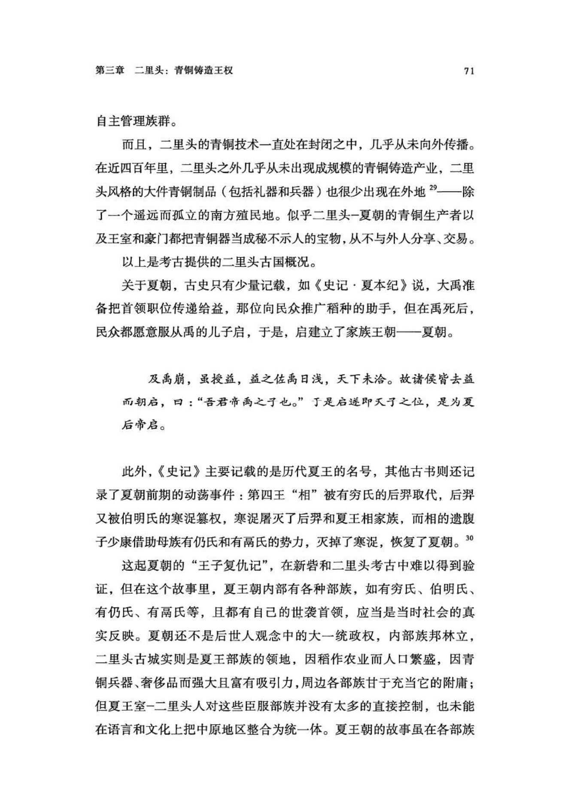
原书阅读器页 086原书物理 PDF 页 084印刷页 72
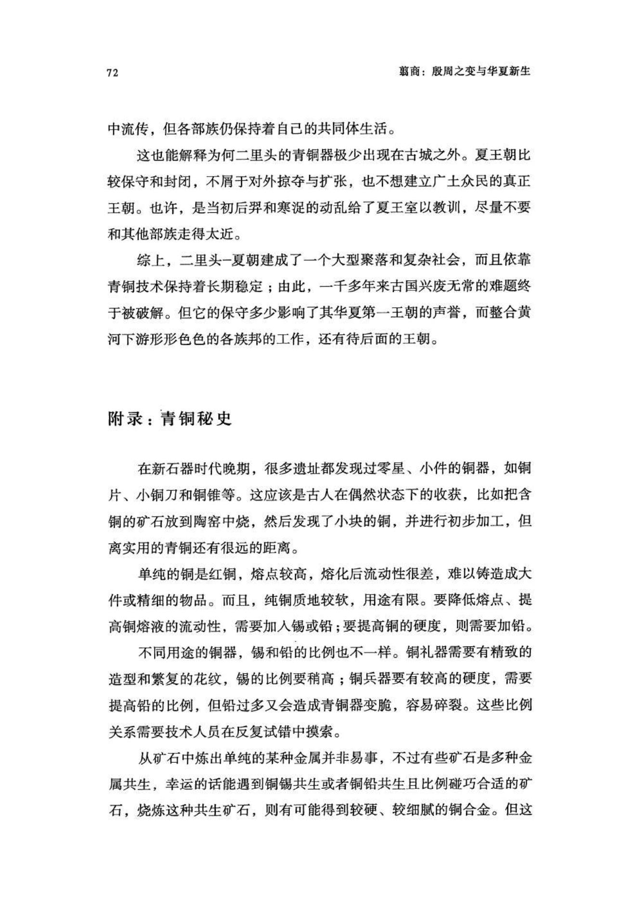
原书阅读器页 087原书物理 PDF 页 085印刷页 73
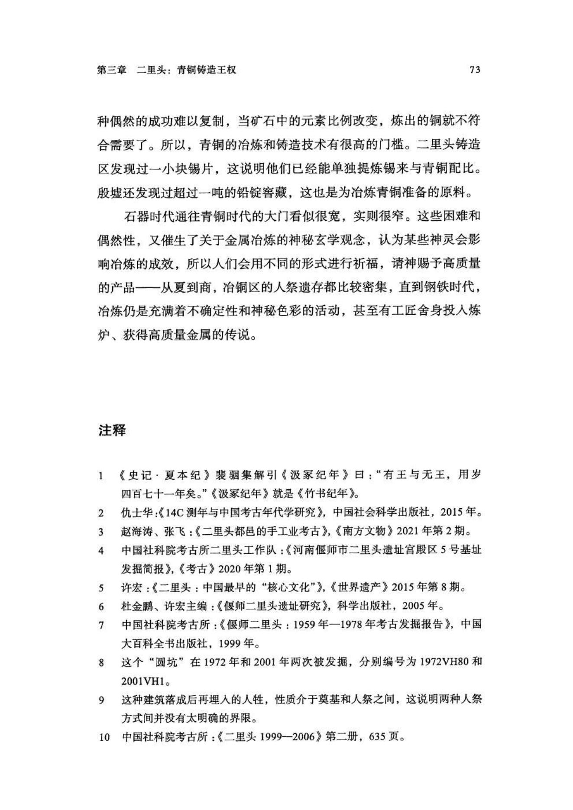
原书阅读器页 088原书物理 PDF 页 086印刷页 74
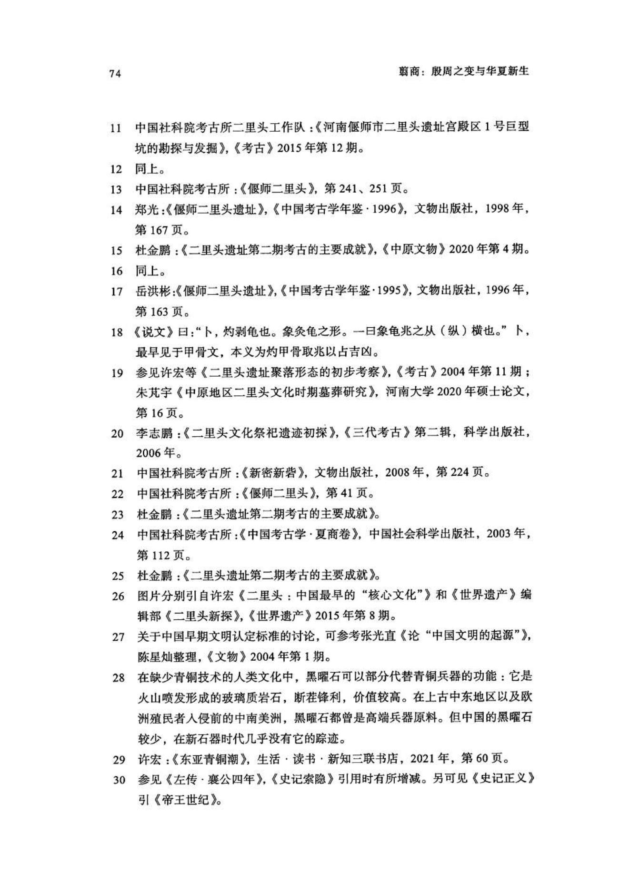
编辑札记
标记
先在正文中选择文字，再输入拼音；可用“拼音；简注”。